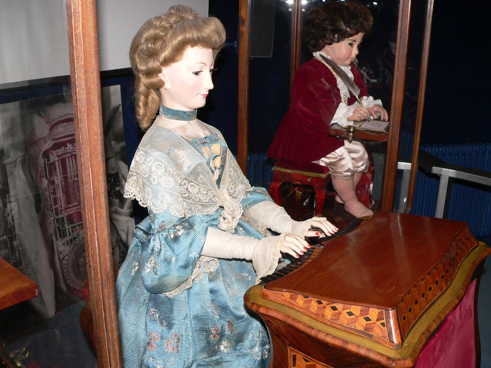

Mechanical Automatons Blog 1: An Automaton I Admire

 https://en.wikipedia.org/wiki/Jaquet-Droz_automata#/media/File:Automates-Jaquet-Droz-p1030490.jpg
{kind=link}
I chose this famous automaton known as “The musician”. Strikingly, it still exists, functions, and even carries its makers name! In the process of reading about different the historical automatons, even among ones which survived long enough to be documented, I was struck by how commonly the maker is long forgotten. This one though, “The musician,” was created by the Jaquet-Droz family, a father and sons, and is one of three automatons they created between 1768 and 1774 to promote their mechanical birds and watches.
I am drawn to “The musician” because of the attention paid in its creation to embodying signs of life. As the humanoid machine sits, its hands move across the clavier before it. The eyes and head follow the hands as the fingers play, carefully taping out the tune live on instrument. It is described to breath as it plays, a mechanical bellows operating its chest, in a way which the spectators of antiquity described as emotionally infused, as if moved by song. Impressively, the machine “knows” or “is programed with” six possible selections.